How to extend Embedded Software
This document aims to describe to process of how to extend the hardware interface and low level software.
Before starting to develop and adding code to the embedded software you need to first make sure you need to add something here.
If you;
- Want to add an embedded sensor / actuator
- Need to add a new CAN signal or frame to existing sensor / actuator
Then you are in the right spot!! If not, take a look at Hardware_Interface_Low_Level_Computer or High_Level_Control_Computer, maybe you intended to add functionality there!
Prerequisites
In order to start adding functionality it is recommended to have a basic understanding of:
- C++ OR Python development
- Embedded Development
- CAN bus
- docker containers (How to start, stop, restart and configure)
- Basic Linux - The container software environment is mainly navigated in through a terminal
Software wise, you need to have the following installed:
- docker
- git
- VSCode (recommended but any IDE may be suitable)
- PlatformIO extension
Hardware wise, it is recommended you have:
- Linux based x86 host computer
Add New Functionalities
First of all make sure you have read the general design principles document for autonomous platform generation 4 located at autonomous_platform/HOW_TO_EXTEND.md. This document takes precedence over anything written in this document in order to unify the development process across all software layers.
Standard base ECU
Autonomous platform generation 4 uses a standard base ECU (Electronic Control Unit) meaning every embedded software should use the same hardware. The ECU or node box has a standardized Input and Output. ECUs are connected together in a CAN bus network, this network contains the Hardware Interface hardware, the Raspberry Pi 4b, which links the network with higher level software. Onto the base ECU specific hardware for a specific function can be added. For example, for the SPCU (Steering Propulsion Control Unit) there are DACs and Motor Controller hardware connected to the ECU.
Inputs:
- CAN bus passthrough (Through DB 9 connector)
- 12v Power (Through XT60 connector)
Outputs:
- CAN bus passthrough (Through DB 9 connector)
- 5v Power
- 3.3v Power
- GPIO pins
It is preferred to build a new ECU node when adding functionality to autonomous platform to prevent breaking existing functionality. ECUs should preferably
If new functionality cannot be implemented on an existing ECU node, a new hardware node must be built. See How to Build new ECU.
build a new ECU
- Start 3D printing generic ECU components (top, bottom, internal component holders)
Please check
CADfolder for the list of components that need to be printed. In the CAD folder the Node box bottom is not the same as the one on the existing go-kart.
The estimated material consumption (with reasonable slicer settings) is around 200 grams. And total print time is around 16-18 hours. Grab some coffee and leave it printing overnight! Make sure the first layers stick properly to the printing bed before leaving.
Note: Make sure you add supports manually for the print-in-place XT60 connector clampdowns. Any other support is not strictly necessary. These are circled in red below.
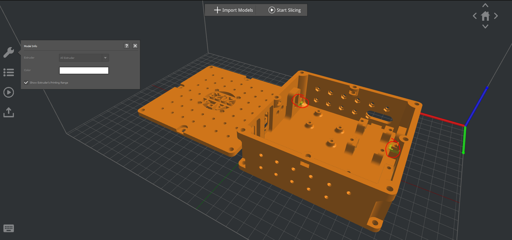{ width=70% }
- Make sure all components are working individually before mounting them inside the node. I.e flashing the bluepill, measuring output from dc-dc converters, making sure the MCP2515 can bus board is working
A schematic illustration of the components inside the generic ECU can be seen below.
 { width=70% }
{ width=70% }
- Once 3D print is complete, remove added support material for the XT60 clampdowns
 { width=70% }
{ width=70% }
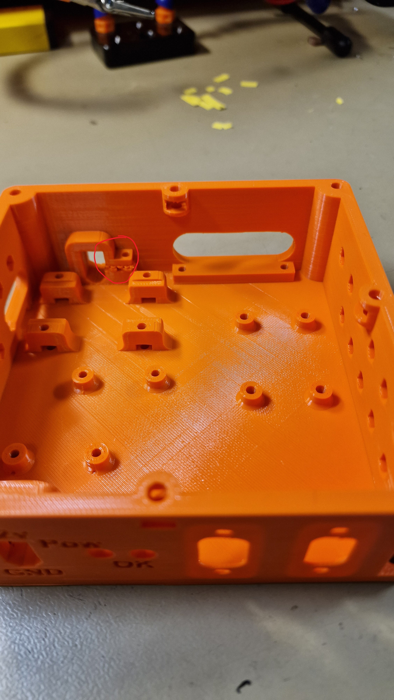{ width=70% }
- Insert 12 M3 nuts in the hex shaped holes on the underside
Note: The hole circled in blue shall also have a m3 nut.
 { width=70% }
{ width=70% }
- Assemble power distribution and mount inside HW node.
A schematic for the power distribution inside the HW node can be found below.
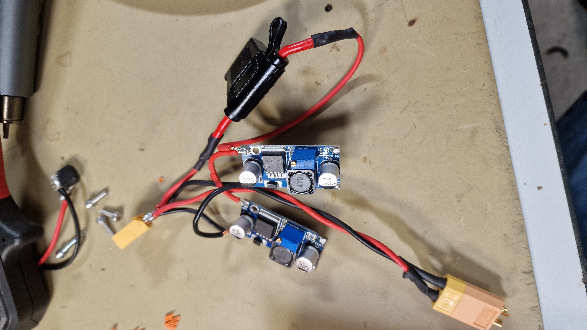{ width=70% }
- Mount power distribution inside node.
The XT60 contacts are inserted into the 3D printed clamp. The DC-DC converters are screwed in with 2 M3x10mm screws respectively.
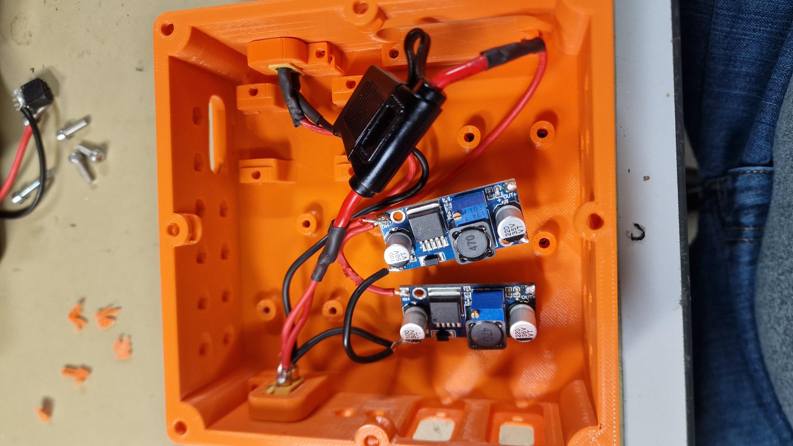{ width=70% }
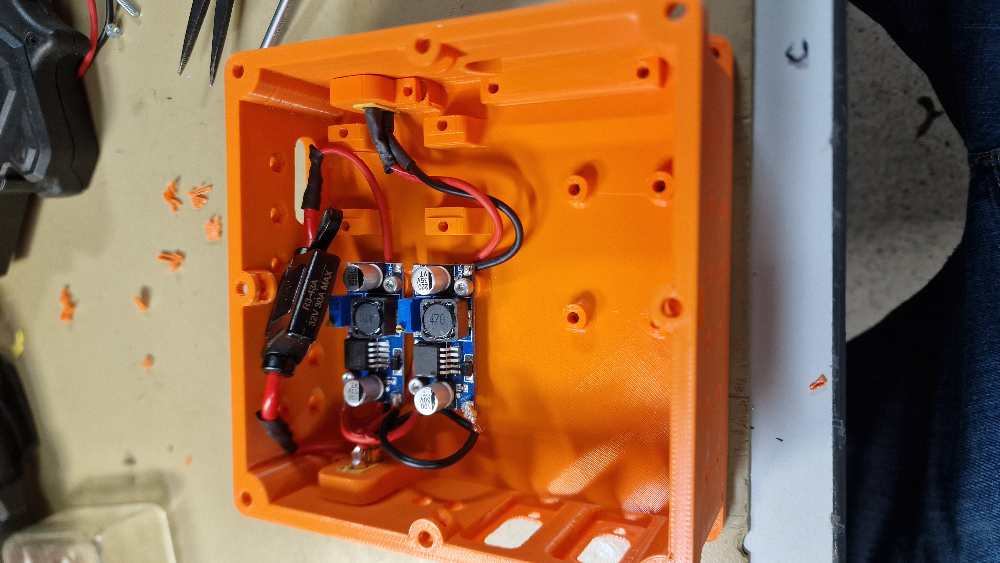{ width=70% }
- Assemble CAN module and D-Sub 9 connectors. A wiring diagram can be found below.
 { width=70% }
{ width=70% }
 { width=70% }
{ width=70% }
- Mount CAN module and D-Sub 9 connectors inside HW node.
D-Sub 9 connectors are screwed in from outside. The MCP2515 card is screwed in with two M3x10mm screws.
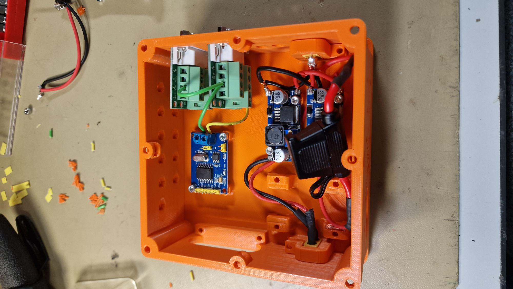{ width=70% }
 { width=70% }
{ width=70% }
- Insert 4 M3 nuts inside STM32 hold down pillars. Make sure the hole in the pillars align with the inserted nuts.
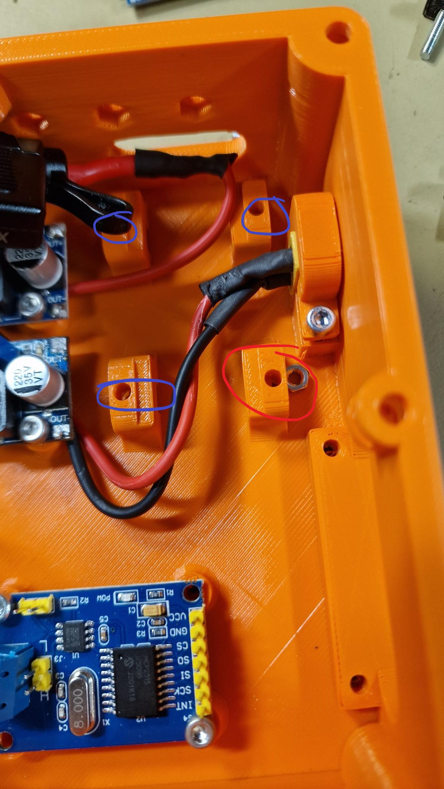{ width=70% }
- Wire programming pins for STM32 Bluepill
The programming wires shall have the following colours:
| STM32F103C8T6 Bluepill Pin | Wire Colour |
|---|---|
| 3.3v | Red |
| IO | Brown |
| SCLK | White |
| GND | Black |
 { width=70% }
{ width=70% }
- Using 4 STM32 bluepill clampdown (3D printed) tabs, clamp down the STM32 bluepill microcontroller.
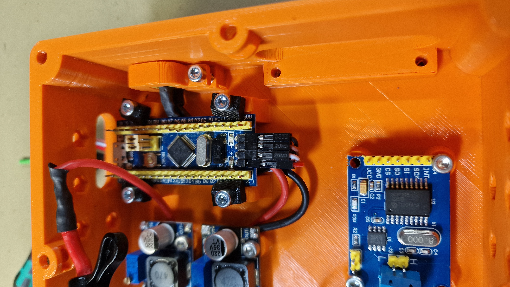{ width=70% }
The four wiring cables shall be passed through to the side of the HW node.
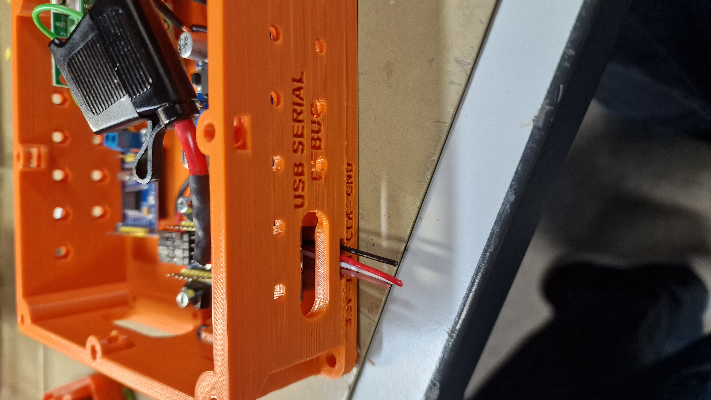{ width=70% }
Cramp JST SM 2.54 female connectors on the outgoing programming wires. Insert a heat shrink cable over the cables.
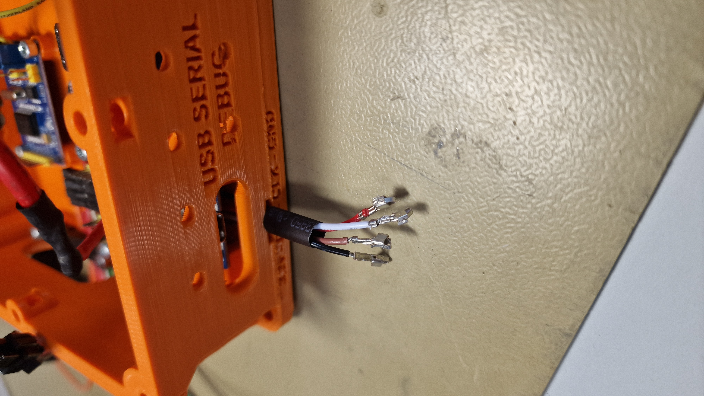{ width=70% }
Insert the female JST SM 2.54 crimped connectors into a male JS connector as seen below, it is important that the colour and placement are the same between ECU nodes.
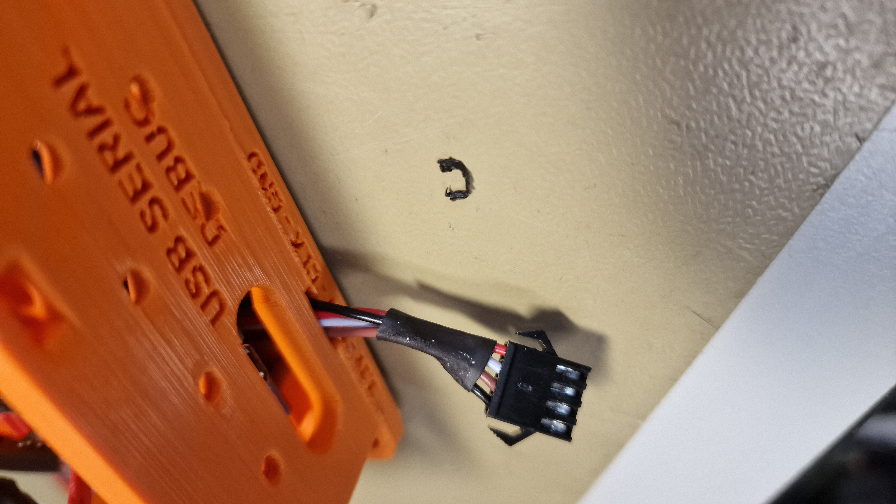{ width=70% }
- Screw down the outgoing cable hold-down (3D printed component). Use two M3x16mm screws.
 { width=70% }
{ width=70% }
- Installing 12v dc fan for cooling. A cooling fan should be screwed into the top cover of the ECU using 4 M3 screws and nuts.
First, cut the fan cable in two pieces.
 { width=70% }
{ width=70% }
Connect the two cables together using JST SM 2.54 2 pin connector. This is to make the top cover completely removable if desired.
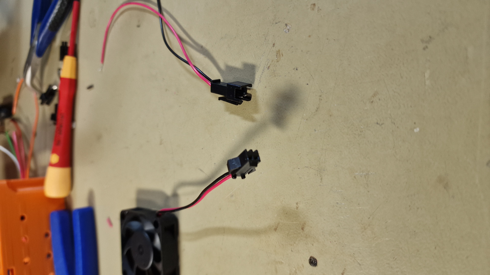{ width=70% }
Solder the fan +12v and GND to the power in. (After the fuse). This can be done by connecting the wires to the dc-dc converters in terminals.
 { width=70% }
{ width=70% }
The fan shall then be mounted to the top cover as illustrated below. Using 4 M3x16mm screws and 4 M3 nuts.
 { width=70% }
{ width=70% }
 { width=70% }
{ width=70% }
- Power up module
To verify that the previous steps have been done correctly, connect 12v to the XT60 12v in plug on the front.
The expected result would be that the fan turns on and the dc-dc converters light up with a led shining.
The center dc-dc converter should output 3.3v and the dc-dc converter closest to the wall should output 5v.
If it does not power up correctly;
- Make sure you have inserted a 2A, 3A or 5A fuse into the fuse holder
- Check soldering connections using a multimeter
If dc-dc converter out voltage is not correct, adjust the blue potentiometers with a screwdriver until desired voltage is reached.g
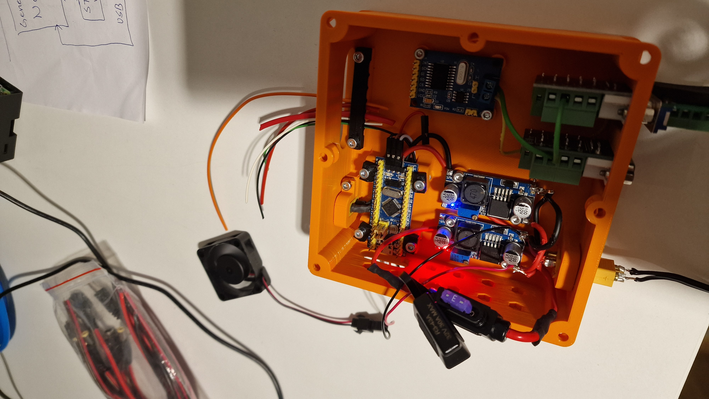{ width=70% }
- Internal wiring of standard components. This can be done with either jumper wires or soldering new wires between internal components.
Here is the wiring diagram for a generic ECU HW node.
The internal wiring of a ECU can be seen bellow. This has to be setup in order to run software on the bluepill microcontroller and communicate over CAN bus.
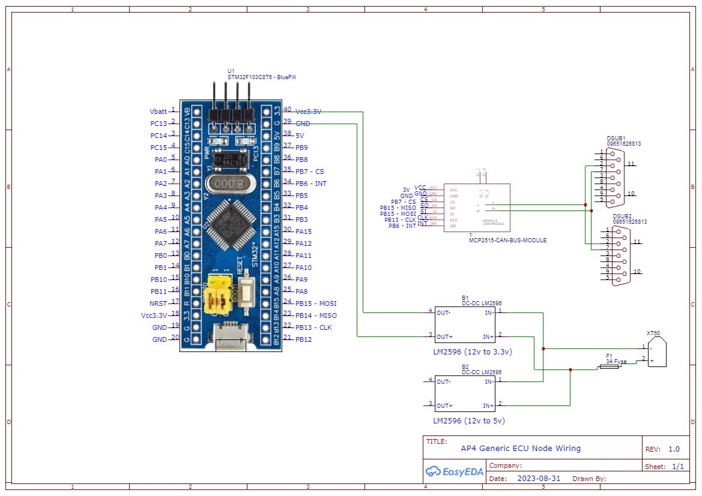{ width=70% }
- Mount top cover onto ECU node.
The top cover can be mounted as pictured below using 4 M4x10mm screws and 4 M4 nuts.
 { width=70% }
{ width=70% }
- Connect any needed embedded sensor(s)
Note done the extra wiring required and how you connected it and add to the node specific documentation.
- Flash new software
How to flash new software to the STM32 bluepill can be found in the HOW_TO_PROGRAM_A_BLUEPILL.md document.
Extend with new function specific ECUs
These are the general guidelines and tips when adding a new function (or sensor) to a generic ECU base.
Questions to ask yourself;
- How can the sensor be connected to a microcontroller? Does it require any communication protocol or can you use a digital or analog pin?
- What power requirements does it have? High power or low power? If the sensor/actuator requires more power (and or different voltage) from what the generic ECU can supply you need to take this into consideration
- Am I adding new functionality to an existing ECU or am I adding completely new functionality? Maybe it is not necessary to build a new ECU node from scratch
- What parts do I have in inventory?
- What parts do I have to buy?
Very briefly explained, here are the steps you should take to implement new functionality with embedded sensors or actuators.
-
Add specific hardware modules
-
Built a small test-rig with a microcontroller & breadboard to verify functionalities and software libraries needed.
-
Build, solder and connect a generic ECU base (see SPCU). Interface the specific hardware module.
-
Create a CAD model of the new sensor and how it should be mounted to the platform. (Make sure it fits the standardized hole pattern if it should be mounted to an ECU or aluminum sheet)
-
If needed, update the CAN protocol by editing the dbc file and autogenerate new database in c-format.
-
Copy the Template code for ECUs.
-
Flash both the ECU and central master computer (update the CAN to ROS2 topic converter) with the latest CAN protocol. See
HOW_TO_EXTEND.mdinHardware_Interface_Low_Level_Computerdirectory -
Add generic ECU code in the embedded software, follow the structure of the SPCU.
-
When the embedded software of the ECU is verified, connect the to the rest of AP4 using a db9 Female-Female cable and a xt60 outlet to supply.
Unified CAN database and how to modify
The CAN database follows dbc format, CAN and dbc guide. The dbc file can be edited using a dbc-editor an example of this is the KVASER-DATABASE-EDITOR. When opening the dbc file for AP4 in kvaser, it will look like the figure below:

- Message Name in the database. This is the frames defined for a CAN message. What id, Data length (bytes) etc.
- Signals in each message. User defined regarding name, placement in the data-field, offsets, factor and so on.
- Graphical Illustration of datafield for the selected message/frame in the database.
In order to make sense of the dbc files, the embedded software needs the information of the dbc file in a c format. Thus AP4 converts dbc file into c-functions and data types, in order to simply encode and decode. Using howerj dbcc repo to convert.

When the dbc is edited and saved, run the following command in a Linux Machine whilst located in path: CAN_Nodes_Microcontroller_Code\CAN_LIBRARY_DATABASE
. create_database_from_dbc_script.sh
Down below is a simple flowchart of the way of working with the CAN protocols auto generation and dbc editing.

Down below can be seen how all the Software components refers to the same database meaning that a change in the CAN protocol at a single place will affect the whole system.

Also can be seen above how the central master computer, converts CAN messages to ROS2 topics to be later used in higher level algorithms. The CAN signals To ROS2 Topic Converter is illustrated in the figure below, implemented on the Raspberry Pi4b that acts as an interface in the central unit. The converter also converts topics to CAN frames that are then transmitted onto the CAN network.
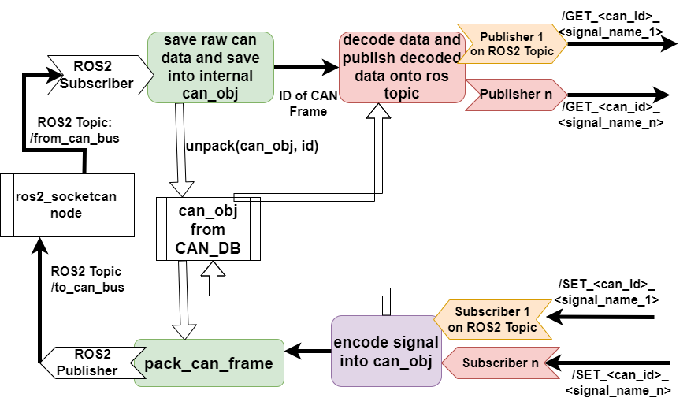
Adding New CAN Frames And Signals
When adding new CAN frames and signals, changes have to be made in the "CAN_DB.dbc" file, new C code has to generated as described in CAN_Nodes_Microcontroller_Code\CAN_LIBRARY_DATABASE\README.md. Lastly, the software in hardware interface and low level software has to be adjusted for the newly added frames. This is described in Hardware_Interface_Low_Level_Computer\HOW_TO_EXTEND.md.
When adding new CAN frames it is recommended to add new frames and signals instead of changing existing frames/signals. IF EXISTING CAN FRAMES/SIGNALS ARE CHANGED, EXISTING ECUS MUST BE REFLASHED WITH NEW SOFTWARE. If one appends new signals and frames to the database it not strictly necessary to re-flash existing ECUs.
Adding new CAN frames and or signals is described in detail in CAN_Nodes_Microcontroller_Code\HOW_TO_EXTEND.md